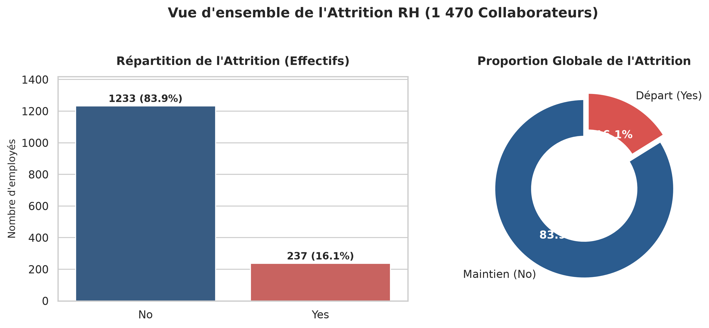
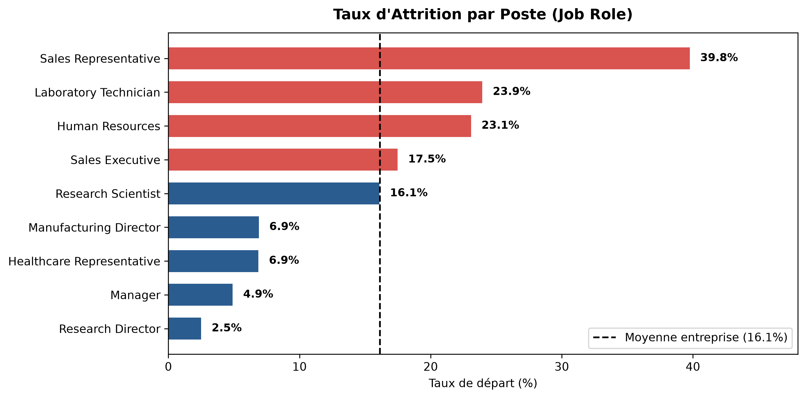
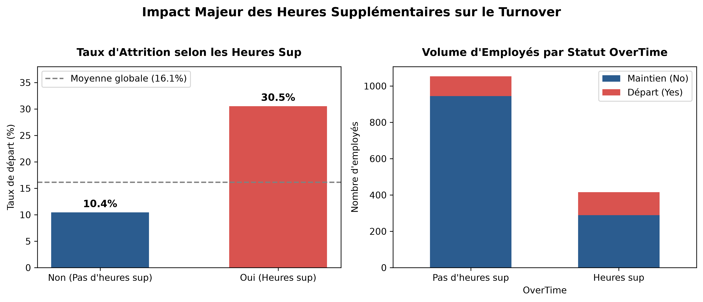
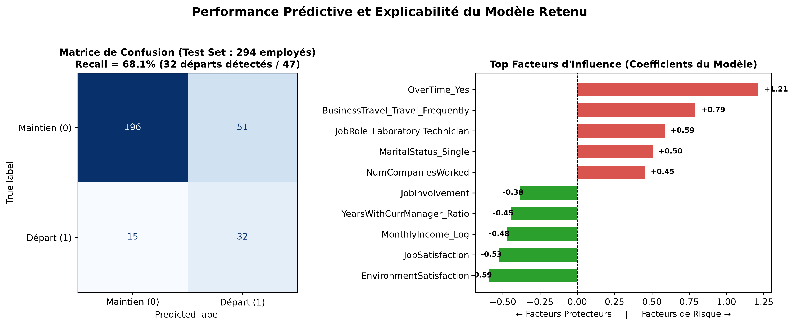

Dans un contexte où le départ non planifié d'un collaborateur engendre des coûts directs de recrutement, d'intégration et une déperdition critique de savoir-faire, ce projet a pour mission de transformer la gestion de l'attrition d'une posture réactive à une démarche proactive et ciblée.
L'analyse exploratoire exhaustive menée sur les 1 470 observations confirme que l'attrition n'est pas uniforme mais se concentre sur des segments d'activité et des situations professionnelles bien identifiés.

Le déséquilibre de classe (environ 1 départ pour 5 salariés stables) impose de rejeter l'exactitude globale (Accuracy) qui serait trompeuse, et de prioriser la sensibilité (Recall) afin de ne pas laisser échapper les collaborateurs sur le départ.
Le taux d'attrition varie considérablement selon la fonction occupée. Les fonctions commerciales de terrain (Sales Representatives) connaissent un taux d'attrition critique de 39.8%, suivies par les techniciens de laboratoire (23.9%). À l'opposé, les fonctions de direction (Research Directors et Managers) présentent une fidélité exemplaire avec moins de 5% de départs.

L'analyse bivariée confirme le rôle déstabilisateur des contraintes professionnelles cumulées. Le facteur le plus discriminant de tout le jeu de données réside dans l'accomplissement d'heures supplémentaires régulières (OverTime).

Conformément aux exigences de rigueur méthodologique, un pipeline sans fuite de données (anti-Data Leakage) a été mis en œuvre. Après comparaison sous validation croisée stratifiée à 5 blocs de plusieurs algorithmes (Random Forest, Boosting, Régression Logistique), le modèle champion retenu est une Régression Logistique Régularisée (C=0.1) avec pondération de classe (class_weight='balanced').
| Métrique | Score Obtenu (Test Set) | Objectif & Interprétation RH |
|---|---|---|
| Recall (Rappel) | 68.1% | 32 départs détectés sur 47 (le taux de détection a doublé par rapport au modèle standard). |
| ROC-AUC | 0.815 | Excellente capacité de discrimination globale des probabilités de départ. |
| Précision | 38.6% | 4 alertes sur 10 correspondent à un départ réel avéré (taux opérationnel acceptable). |
| F1-Score | 0.492 | Compromis optimisé pour la détection proactive sans saturer les équipes RH. |

L'analyse des coefficients standardisés du modèle permet d'orienter les décisions managériales autour de 4 axes prioritaires :
Gender a été délibérément exclue du modèle prédictif pour des motifs de fairness et d'éthique algorithmique, le taux de démission étant par ailleurs très proche entre hommes (17%) et femmes (15%). Les prédictions doivent toujours être utilisées comme outil d'aide à la décision bienveillante et jamais à des fins disciplinaires.